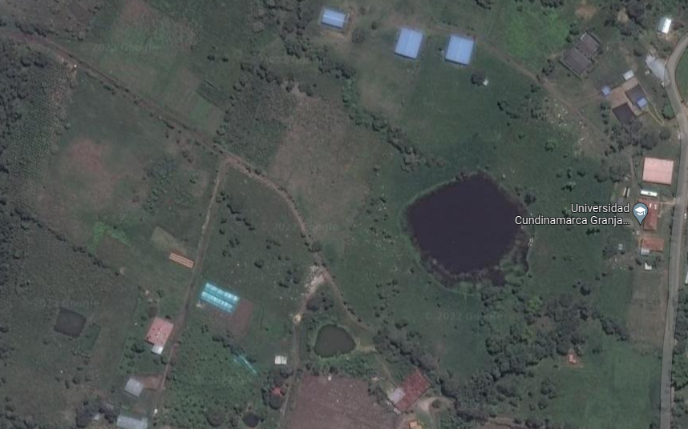

En la actualidad la Unidad Agroambiental la Esperanza cuenta
con un área agrícola dedicada al cultivo de café con una
extensión de 2.3 hectáreas, de las cuales 1.3 hectáreas, se
encuentran en su tercer año de producción.
Datos sobre el cultivo de café
{{inf.bold}}
Mapa

Estas son algunas fotografias y noticias de la granja La
Esperanza, haz clic sobre ellas para ver mas infomación
La unidad Agroambiental "La Esperanza" de la
Universidad de Cundinamarca se encuentra ubicada en la vereda
Guavio Bajo del municipio de Fusagasugá
Granja La Esperanza 👨🌾
Latitud: {{ latFarm }}
Longitud: {{ longFarm }}
Tú estas aquí!! 🙋♂️
Latitud: {{ latMe }}
Longitud: {{ longMe }}
El cultivo de café de la unidad Agroambiental "La Esperanza" de la
Universidad de Cundinamarca cuenta actualmente con {{nodes.length}} nodos, míralos en el siguiente mapa.